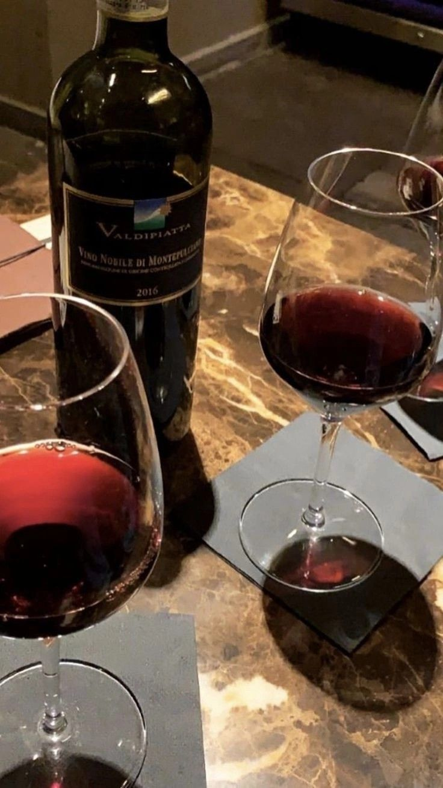
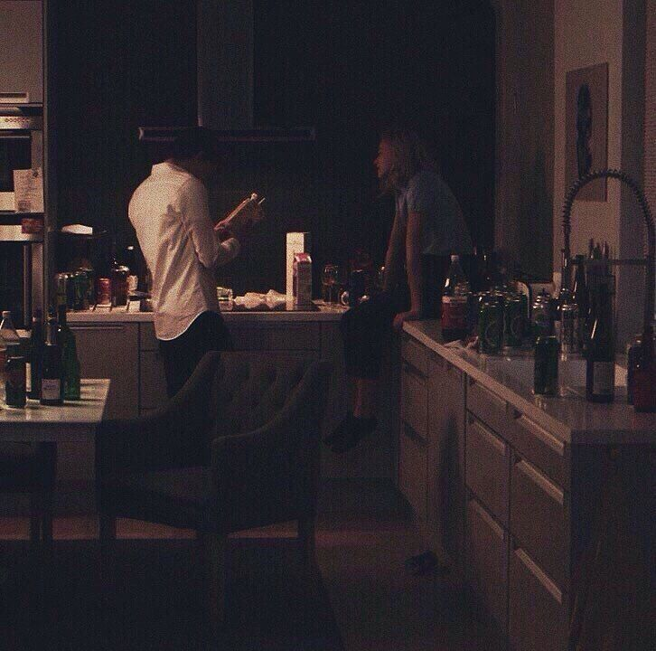

NUESTRO TIEMPO JUNTOS

Comparitir un vino a solas se volvio una sensacion demasiada
especial y intima que solo quiero disfrutar
si estoy contigo.
Con cada
trago de tí me da más sed
CHEF PROFESIONAL

Preparas los mejores platillos
dandole un sazon especial de amor, que te queda
delicioso...
Vivo en los recuerdos que creamos juntos
Recordando en los días que nos quedamlos en depas,
imaginando que es nuestro mientras me cocinas
mi plato favorito.